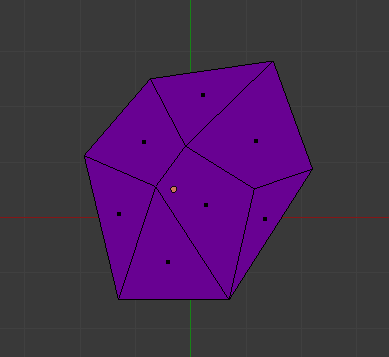
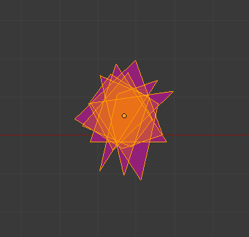
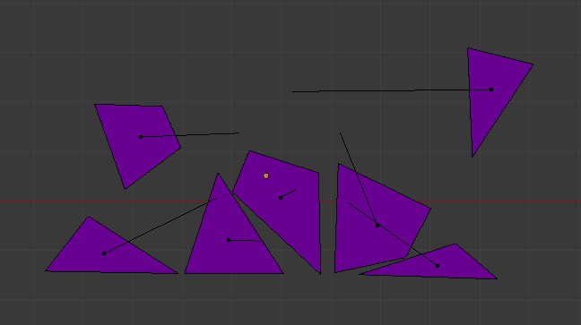
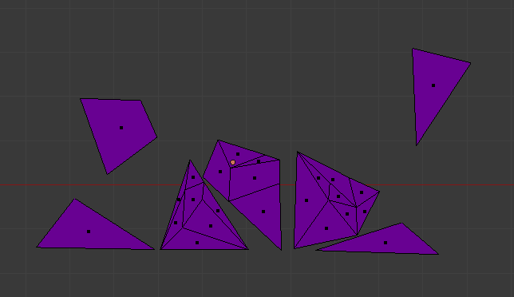

Fracture Simulation Workflow with Nodes¶
There are two principal methods of fracturing:
- User editing tools for manual fracturing
- Dynamic fracturing of a mesh based on collisions
Dynamic fracturing can also be seen as repeated application of the same tools as users would apply during editing, only based on collision events rather than operator invocations. So the description will focus on dynamic fracture and regard manual fracturing as a subset of this workflow.
Several distinct processes can be identified that have to work together for fracture effects:
Subdividing an existing mesh into smaller parts
Fractured mesh
Internally all shards are centered
There are a number of potential methods to be used here:
- regular polygonal grids
- voronoi cells (given by their center points)
- explicit fracture lines and planes
{kind=link}
{kind=link}
The description of the fractured mesh must be suitable to keep track of “shards”. Original mesh data stays untouched by the fracturing (non-destructive process), the shard meshes are stored separately.
Repeated application of the fracture process on the resulting shard meshes leads to a sequence of shard sets over time (increasing shard numbers with each fracture, but perhaps also removing too small shards for efficiency). This sequence constitutes an iterative process and the results should be cached.
Transform of individual shards
A transform can be kept for each shard without actually modifying vertex location. The “final” shard geometry for rendering can then be calculated from untransformed shard meshes. Particles are a suitable method of storing center points and rotations for each shard.
Rigid Body simulation
Particles represent rigid bodies with motion states (location, rotation and velocity). Shard meshes represent their collision shapes. The motion state of particles is used as the shard transform for rendering.
Re-fracturing on collisions
Collision events can be used to trigger another fracture on the current shard set. Collision contacts and impact forces are registered during the rigid body simulation step. After the rigid body step a post-process then re-fractures the shards (and modifies the particles to match).
Fracture mesh data design internals have been discussed at length for the fracture modifier branch (T42306). For the purpose of this proposal it is assumed that a “fracture mesh” is simply a regular Mesh datablock that exists in the BlenderData. This datablock can be hooked up to an object as a mesh component, and then used as such in a node system.
The associated particle system is also a component of the same object. It is connected to the fracture mesh in three places:
- “Particle Rigid Body Simulation” node: Particles are used in the rigid body simulation as dynamic bodies. Their collision shapes are defined through the fracture mesh shards.
- “Dynamic Fracture” node: Fracture is (optionally) applied to shards and particles as a post-process after simulation, using cached collision contacts.
- “Apply Island Transforms” node: For rendering a final mesh (DerivedMesh) is generated from the fracture mesh by applying the particle transforms on each shard. The result is a single regular mesh with the transforms “baked in”, so that it works just like any other mesh for the renderer.
Note
The data flow of particles and mesh data. The “Components” node provides access to particle and mesh data created by the user. When passed to the “Rigid Body” node and then to the “Dynamic Fracture” node this data is modified in each node, first by adding motion state particle attributes and then by applying the fracture algorithm. Read-only sockets are shown transparent, they can form branches of the main data flow.
Each of the nodes could in turn be broken down into a subgraph, so let’s have a look at their internals.
Particle Rigid Body Simulation¶
Rigid Body simulation requires interaction of many objects on the same level. Other simulations can be hierarchical. e.g. hair bounces off an obstacle but the obstacle is not affected by the much lighter hair. Rigid bodies have to collide with each other, so the solver works on a scene-wide level.
The consequence is that a rigid body node is not a closed function, but has to communicate with the RB solver through the dependency graph. The process is split into a “pre RB sim” part, and a “post RB sim” part which has to wait for the completion of the rigid body time step.
A list of rigid bodies is created for each particle. The RB simulation world keeps track of existing RBs, which are identified through their “id” value (matching ids of particles), so that we can map back motion states to particles. Many more physical properties of RBs could be defined here, depending on the desired features of the fractured mesh. For instance, restitution factors (“bouncyness”) are quite important for the “feel” of a simulation. For the sake of simplicity we will ignore these aspects now and assume the RB sim uses sensible defaults.
Apply the resulting motion state from RB sim on the particles. Importantly this node has a dependency on the RB step inside the depsgraph! That means that the object update can not be scheduled as a single monolithic depsgraph event, but must be broken into at least 2 pieces, PRE_RIGIDBODY and POST_RIGIDBODY, which get scheduled accordingly.
Dynamic Fracture¶
Store a list of contact points for each RB/particle/shard during the RB time step, along with impact forces from collision. This node will have to inform the rigid body system (Bullet) to cache contacts before the time step is calculated. After the time step this contact info can then be accessed as a yet-to-be-defined data structure.
This is a very simple approach to dynamic fracturing: Find the single largest impact for each shard, then fracture the shard based on that impact vector. The exact method is left unspecified here. Much more elaborate methods could be imagined here of course, right up to using a full FEM system. However, for the purposes of CG a simple algorithm is probably preferable for performance and controllability.
The result in any case will be two new lists of shards and associated particles. Usually (but not necessarily) these will be larger than the original lists, when shards get split into multiple pieces.
Apply Island Transforms¶
The display mesh starts out as a plain copy of the fracture mesh (with all shards centered on the origin).
We then want to transform the vertex locations using the particle motion state transforms. However, there are fewer particles than vertices, so we first have to map particle transforms onto a per-vertex transform list!
This is done by getting the shard index from vertices (matching the particle index), and then mapping the particle transforms. The result is a new list that repeats each particle transform for the range of vertices of that shard.
shard: (1,1,1, 2,2,2,2, 3,3,3, 4,4,4,4,4)
pa_tfm: (T1, T2, T3, T4)
=> map(pa_tfm, shard) = (T1,T1,T1, T2,T2,T2,T2, T3,T3,T3, T4,T4,T4,T4,T4)
Finally the per-vertex transforms can be applied to create a modified vertex location list. By setting this as the new vertex location attribute we complete the mesh result.